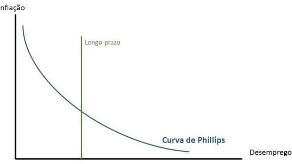

Projetos
-
Limpeza e pré-processamento de dados - Inadimplência em Cartões de Crédito
Análise Exploratória de Dados (EDA) baseado no dataset Default Credit Card Clients. Dividida em quatro partes: limpeza e processamento de dados; análise descritiva; modelagem estatística e visualização dos resultados.
-
Previsão da Inflação
Uso de técnicas de machine learning para identificar padrões em dados econômicos e gerar estimativas dinâmicas de inflação, incorporando múltiplas variáveis e adaptação a mudanças estruturais.
Projeto em andamento -

Curva de Phillips
Modelagem da relação entre inflação e desemprego em R, usando pacotes como tidyverse e dynlm, com estimativas e visualizações interativas.
Projeto em andamento